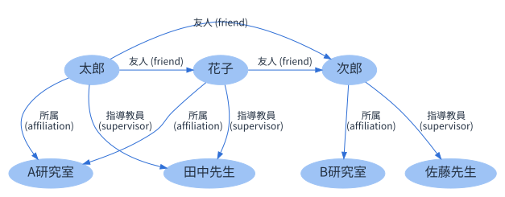

MiniKG.ttlを保存 ／ TSVデータ ／ 簡易RDF-DB v4.1を開く
MiniKG.ttlを読み込み、各クエリをコピーして実行してください。実行前に結果を予想しましょう。例7は発展課題です。各例の見出しには対応するスライドの番号を示しています。

| 主語 | 述語 | 目的語 |
|---|---|---|
| 太郎 | 友人 | 花子 |
| 花子 | 友人 | 次郎 |
| 太郎 | 友人 | 次郎 |
| 太郎 | 所属 | A研究室 |
| 花子 | 所属 | A研究室 |
| 次郎 | 所属 | B研究室 |
| 太郎 | 指導教員 | 田中先生 |
| 花子 | 指導教員 | 田中先生 |
| 次郎 | 指導教員 | 佐藤先生 |
述語の対応：友人＝prop:friend、所属＝prop:affiliation、指導教員＝prop:supervisor
SELECT ?s ?p ?o WHERE { ?s ?p ?o . }
PREFIX rdfs: <http://www.w3.org/2000/01/rdf-schema#>
SELECT ?x ?label WHERE {
?x rdfs:label ?label .
}
PREFIX prop: <http://example.com/prop/>
SELECT ?x ?y WHERE {
?x prop:friend ?y .
}
PREFIX prop: <http://example.com/prop/>
PREFIX rdfs: <http://www.w3.org/2000/01/rdf-schema#>
SELECT ?name1 ?name2 WHERE {
?x prop:friend ?y .
?x rdfs:label ?name1 .
?y rdfs:label ?name2 .
}
PREFIX prop: <http://example.com/prop/>
PREFIX rdfs: <http://www.w3.org/2000/01/rdf-schema#>
SELECT ?name1 ?name2 ?name3 WHERE {
?x prop:friend ?y .
?y prop:friend ?z .
?x rdfs:label ?name1 .
?y rdfs:label ?name2 .
?z rdfs:label ?name3 .
}
PREFIX prop: <http://example.com/prop/>
PREFIX rdfs: <http://www.w3.org/2000/01/rdf-schema#>
SELECT ?teacherName WHERE {
?student rdfs:label "太郎"@ja .
?student prop:supervisor ?teacher .
?teacher rdfs:label ?teacherName .
}
PREFIX prop: <http://example.com/prop/>
SELECT ?x ?y ?lab WHERE {
?x prop:affiliation ?lab .
?y prop:affiliation ?lab .
FILTER (?x != ?y)
}
PREFIX prop: <http://example.com/prop/>
PREFIX rdfs: <http://www.w3.org/2000/01/rdf-schema#>
SELECT ?name1 ?name2 ?labName WHERE {
?x prop:affiliation ?lab .
?y prop:affiliation ?lab .
FILTER (?x != ?y)
?x rdfs:label ?name1 .
?y rdfs:label ?name2 .
?lab rdfs:label ?labName .
}